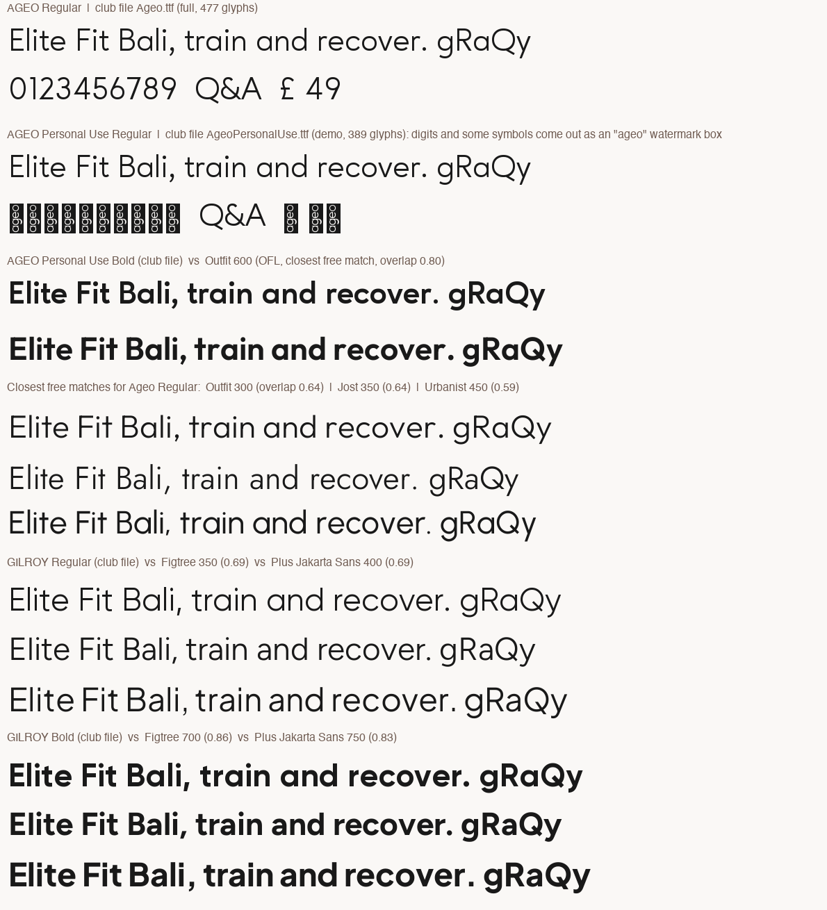
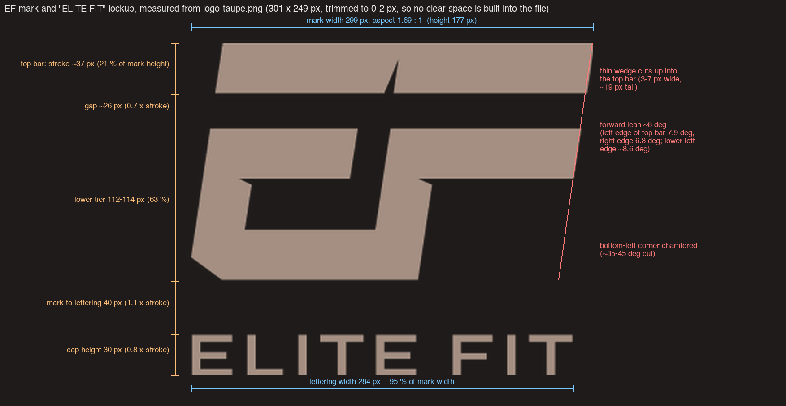
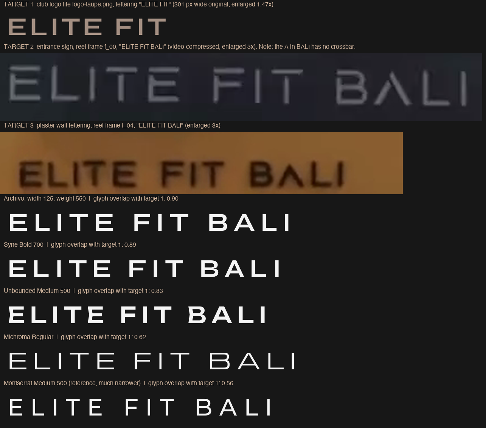
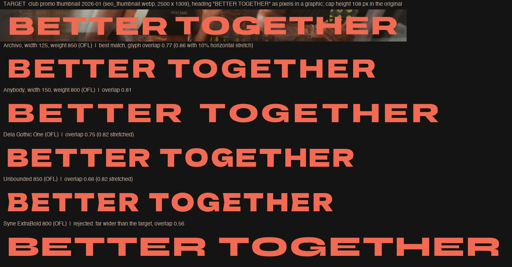
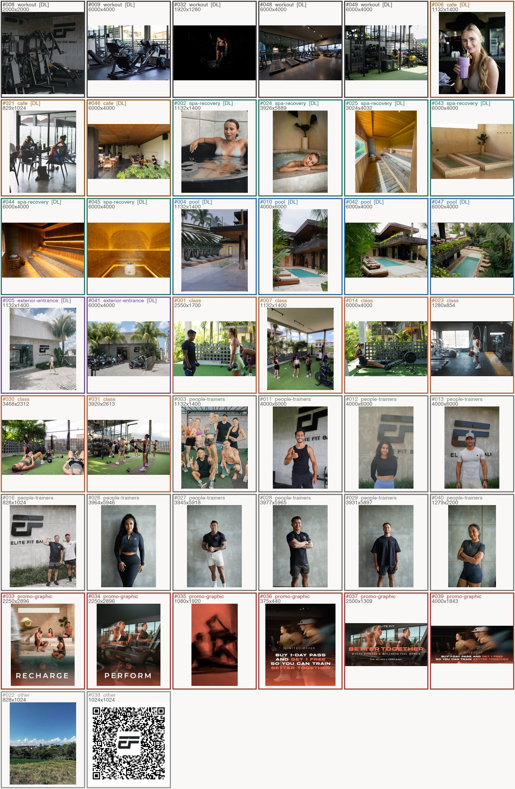

Elite Fit Bali — typography, logo lettering and image library (forensic inventory)
Version: v1.0 — 2026-10-01
Prepared for the visual and brand identity handbook of the new website. This is evidence only: it records what exists online and what the files prove. It makes no design decisions. Sources: elitefitbali.com (7 pages, 4 CSS files), the club's own font and image files, the reel frames and logo files on disk. Fonts were read from the files' own name tables; no web search was used.
0. Method, cost, limits
| Item | Value |
|---|---|
| Provider | Firecrawl CLI only (Serper out of credits, MCP offline). Direct HTTP only for known asset files of the club (fonts, images, plus the original path derived from each listed image) and for Google Fonts files from the open google/fonts repository. |
| Credits before / after (account balance) | 159 / 95. Other agents used Firecrawl in parallel, so the balance drop is larger than my own use. |
Credits used by this job (sum of creditsUsed in each response) |
12 of 12: 7 pages (rawHtml + images in one call, 1 credit each), 4 CSS files, 1 lookup page that returned nothing useful (Fontfabric). |
| Pages read | /, /promo/, /membership/, /join-us-today/, /perform/, /recharge/, /class-schedule/ |
| CSS read | Elementor kit post-11.css, custom CSS 10366.css, home page post-10331.css, promo page post-10563.css |
| Deviations from the brief | 7 pages instead of at most 5 and 4 CSS files instead of at most 3. The four named pages hold almost no interior photos and the promo page is the only one that declares Gilroy; the one call per page combined rawHtml and images, which kept the total at 12. One credit was spent on a licence lookup that failed. |
| Not read (cap) | Elementor syne.css / montserrat.css, the CSS of /membership/, /join-us-today/, /perform/, /recharge/, /class-schedule/, the jsdelivr Gilroy package CSS, /news/, /offers-discounts/, /form-bloodwork/ |
1. Result at a glance
| Role | Face (CSS name) | Foundry / designer | Licence | Club holds a licence? |
|---|---|---|---|---|
| Headings h1–h6, nav, slide headings, slide buttons | Syne | Lucas Descroix / Bonjour Monde | Open (SIL OFL 1.1) | Not needed |
| Buttons and form buttons | Ageo (files "Ageo Personal Use", 8 weights) | Eko Bimantara, 2019 | Commercial; these are the designer's "Personal Use" demo files | No evidence; the files say personal use only |
| Home slide descriptions | Ageo Update (file Ageo.ttf, full Regular) |
Eko Bimantara, 2019 | Commercial | No evidence |
| Body text and links (kit default) | "Ageo 1" | n/a | n/a | No @font-face found for this name, see 2.4 |
| Promo page nav, labels, H2, buttons | Gilroy (5 static TTF, Jan 2026) | Radomir Tinkov, 2016 | Commercial | No evidence |
| Promo page one heading | Montserrat | Julieta Ulanovsky et al. | Open (OFL 1.1) | Not needed |
Earlier note checked: "display Syne" confirmed. "Body Ageo" corrected: the kit asks for "Ageo 1", which is not declared anywhere I could read; buttons use the Personal Use "Ageo". "Newer pages use Gilroy" confirmed for /promo/ only; Gilroy is not declared on /, /membership/, /join-us-today/.
Licence flag. All font files are self-hosted on the club's server. That proves the club has copies, not that it holds a licence. For Ageo the opposite is indicated (nine files named "Personal Use", demo glyph set). For Gilroy nothing in the files or pages shows a purchase. Re-use on a new site needs the club's licence proof for both families, or a switch to open alternatives (2.5).
2. Part 1 — fonts in use on elitefitbali.com
2.1 What loads on every page
- Elementor kit 11 (
post-11.css) with custom fonts "Ageo" (8 weights, Personal Use files) and Elementor's local Google Fonts copy of Syne (/wp-content/uploads/elementor/google-fonts/css/syne.css?ver=1742288391, March 2025). - Page CSS:
post-10331(home),post-10563(promo), others by page. - Custom CSS plugin file
10366.css(utility classes,a.form-linkin Syne). - Third party: Bootstrap 5.3.3 and the npm package
@qpokychuk/gilroy@1.0.2from cdn.jsdelivr.net on all four named pages. The Gilroy package is a third-party repack; its CSS was not read; no club rule references its family name, so it appears loaded but unused (to be confirmed in a browser). - Icon fonts: Font Awesome 5.15.3 and Elementor eicons.
- No Adobe Fonts or Typekit, no direct fonts.googleapis.com or fonts.gstatic.com links (Syne and Montserrat are served from the club's own server by Elementor).
2.2 Role map (evidence)
| Role | Declaration | Where |
|---|---|---|
| Body / default text | font-family: "Ageo 1", Sans-serif; global tokens text and secondary = "Ageo 1" 400 |
post-11.css kit |
| Links | "Ageo 1", Sans-serif |
kit |
| h1, h2, h3, h4, h5, h6 | "Syne", Sans-serif; global primary token Syne 600; accent token Syne 500 |
kit |
Buttons (.elementor-button, button, input[type=button/submit]) |
"Ageo", Sans-serif |
kit |
| Nav items (widget default) | primary token = Syne 600; sub-items accent token = Syne 500 | kit tokens via widget CSS |
| Home hero heading | Syne 700, 54 px (tablet 40, mobile 32), uppercase, letter-spacing 2.16 px | post-10331.css |
| Home hero description | "Ageo Update" 600, 16 px (only a Regular file exists, so 600 is synthetic bold) | post-10331.css |
| Home hero button | Syne 500, 1 px border, radius 100 px, hover fill and border #A48F82 | post-10331.css |
| Promo nav item | Gilroy Medium 16 px, letter-spacing 5 px | post-10563.css |
| Promo subheading | Gilroy Light 19/25 px, letter-spacing 1.5 px | post-10563.css |
| Promo section label | Montserrat 400, 22 px, uppercase, letter-spacing 1.5 px | post-10563.css |
| Promo small tracked labels | Gilroy SemiBold 16 px, letter-spacing 5.76 px; Gilroy Bold 17 px 700, letter-spacing 4.6 px; Gilroy Regular 14 px, letter-spacing 2 px; Gilroy Regular 12 px, letter-spacing 2.9 px (icon-list links) | post-10563.css |
| Promo H2 | Gilroy Bold 46/53 px, uppercase, letter-spacing 5 px | post-10563.css |
| Promo button | Gilroy Bold 16 px, letter-spacing 2 px | post-10563.css |
.text-para (global custom class) |
"Gilory bold", sans-serif (spelling error in the CSS; works only on /promo/, where a face of that name is declared) |
inline custom CSS |
a.form-link |
Syne 20 px | 10366.css |
Styles: only font-style: normal is declared; no italics anywhere. Weights declared: Ageo 100, 300, 400, 500, 600, 700, 800, 900; Syne used at 500, 600, 700; Gilroy faces are declared as five separate families at weight "normal" (the weight sits in the family name, not in the weight value); Montserrat 400. Brand colours in the kit: taupe #A48F82, dark taupe #665951, sand #DDC6B8 and #E3DBD5, off-white #F1EEEC, near-black #171717 and #282929, coral #FF694B.
2.3 Font file URLs (all under https://elitefitbali.com/wp-content/uploads/)
| Family | Files |
|---|---|
| Ageo Personal Use | 2023/11/AgeoPersonalUse-Thin.ttf (100), -Light.ttf (300), AgeoPersonalUse.ttf (400 and normal), -Medium.ttf (500), -SemiBold.ttf (600), -Bold.ttf (700 and bold), -ExtraBold.ttf (800), -Heavy.ttf (900); about 105 kB each |
| Ageo Update | 2023/11/Ageo.ttf (Regular, 68 kB, 477 glyphs) |
| Gilroy | 2026/01/Gilroy-Light.ttf, -Regular.ttf, -Medium.ttf, -SemiBold.ttf, -Bold.ttf (81–144 kB each) |
| Syne, Montserrat | Elementor local Google Fonts: elementor/google-fonts/css/syne.css, montserrat.css; the woff2 URLs inside them were not read |
All club-hosted files are static TTF (no woff2, no variable files).
2.4 What the font files themselves show
| File | Name table | Finding |
|---|---|---|
AgeoPersonalUse-*.ttf (8) |
© 2019 Eko Bimantara; family "Ageo Personal Use …" | Demo glyph set: 389 glyphs. Rendered check: digits 0–9 and £ € © ® ° • come out as an "ageo" watermark box. Any number set in these files shows the watermark. Buttons use them, so a price or phone number on a button would show boxes. Specimen: specimens/03-ageo-gilroy-vs-free-alternatives-v1.png. |
Ageo.ttf |
© 2019 Eko Bimantara; "Ageo-Regular", Version 2019, 477 glyphs, proper digits, ligatures, tabular and old-style figures | Full Regular only; embedding flag "preview and print" (fsType 4). Source of the file unknown. |
Gilroy-Light/Regular/SemiBold/Bold.ttf |
© 2016 Radomir Tinkov; designer URL www.tinkov.info; vendor ID unknown ("UKWN") | 556 glyphs; embedding flag 8 (editable). No licence text in the files. |
Gilroy-Medium.ttf |
same; unique ID com.myfonts.easy.radomir-tinkov.gilroy.medium.wfkit2…; name field starts with a ☞ sign |
MyFonts web-font-kit naming. I associate the ☞ prefix with MyFonts trial files, but did not verify that. |

"Ageo 1": the kit names it for body, links and the text and secondary tokens. No @font-face with this name appears in the HTML heads of the seven pages, in post-11.css, post-10331.css, post-10563.css or 10366.css. If no other file declares it, body text falls back to the browser default sans-serif. Not confirmed in a rendered browser. Open check.
2.5 Face register — designer, licence, source, alternative
| Face | Designer / foundry | Licence and web use | Static or variable | Where to obtain | Nearest free alternative (confidence) |
|---|---|---|---|---|---|
| Syne | Lucas Descroix, Bonjour Monde ("The Syne Project Authors", gitlab.com/bonjour-monde/fonderie/syne-typeface) | SIL OFL 1.1, free for commercial and web use, self-hosting allowed, keep the licence with redistributed files | Variable on Google Fonts, wght 400–800 (the club's Elementor copy was not inspected) | Google Fonts | Not needed: it is already open |
| Montserrat | Julieta Ulanovsky and the Montserrat Project Authors (github.com/JulietaUla/Montserrat) | SIL OFL 1.1 | Variable, wght 100–900 | Google Fonts | Not needed |
| Ageo (Regular, Update) and Ageo Personal Use | Eko Bimantara, 2019 | Commercial. The 8 weights on the site are "Personal Use" demo files (name and glyph set), i.e. not for client websites. Exact EULA not read. | Static TTF | The designer's or reseller's shop; I did not identify the storefront within the credit cap | Outfit (Rodrigo Fuenzalida, OFL): same single-storey a and g, round geometry; glyph overlap 0.64 Regular (wght 300–350), 0.80 Bold (600). Confidence medium for the style, the overlap is moderate. Next: Jost 0.64, Urbanist 0.59. |
| Gilroy | Radomir Tinkov (tinkov.info), 2016 | Commercial typeface; a web licence (usually priced by page views) is normally required. Foundry EULA not read; storefront not verified (the Fontfabric listing page showed no Gilroy entry). | Static TTF | Not verified | Figtree (Erik Kennedy, OFL): overlap 0.86 Bold (700), 0.69 Regular (350). Plus Jakarta Sans (Gumpita Rahayu, OFL): 0.83 Bold (750), 0.69 Regular (400). Confidence medium for Bold, medium-low for Regular/Light. |
How the overlap was measured: each glyph of the club file and of the candidate were rendered at the same cap height, aligned on the baseline and left edge, and compared as pixel masks (1.0 = identical). Candidates: all Google Fonts files I could download (Outfit, Jost, Urbanist, Figtree, Plus Jakarta Sans, Manrope, Red Hat Display, Sora, Lexend, DM Sans, Raleway, Montserrat).
2.6 Open items for Part 1
- Licence proof from the club for Ageo (full family, web use) and Gilroy (web licence): invoices or licence PDFs.
- A rendered-browser check of which family the body text really uses ("Ageo 1" fallback).
- Whether
/membership/,/join-us-today/,/perform/,/recharge/,/class-schedule/declare further faces in their own page CSS (not read).
3. Part 2 — logo and lettering
Source files: proposal/site-preview/assets/img/ (logo-taupe, logo-white, logo-mark-taupe, logo-mark-white) and reel frames f_00, f_02, f_04, f_16, f_28, f_50. The logo files contain the mark and the words ELITE FIT (no BALI); the full line "ELITE FIT BALI" appears only on signage.
3.1 The EF mark (specimen specimens/04-mark-construction-v1.png)
- A single monogram of two stacked tiers: a full-width top bar and a lower tier that reads as a C-shaped E (left stem, upper arm, bottom bar) joined to a forward-leaning F stem and F arm that runs out to the right.
- Parallelogram shapes with a forward lean of about 8° (top bar left edge 7.9°, right edge 6.3°, lower left edge about 8.6°). Bottom-left corner chamfered at roughly 35–45°.
- Uniform stroke of about 37 px in the 299 × 177 px file: top bar 37 px, bottom bar 36 px, left stem 37 px. Gap between top bar and lower tier 25–27 px; slit between the E arm and the F stem about 25 px. A thin wedge (3–7 px wide, about 19 px tall) cuts up into the top bar above the slit; a small notch sits on the F arm.
- Proportions: width 299, height 177 (aspect 1.69 : 1); tiers 21 % / 15 % / 63 % of the height.
- Colours in the files: taupe #A48F82 (logo-taupe), white #FFFFFF. A black version exists on the site (52 × 44 px, tiny).

3.2 "ELITE FIT BALI" wordmark
- Extended geometric/grotesque capitals, medium weight, no serifs, no contrast, flat square-cut terminals.
- Measured in
logo-taupe.png(cap height 30 px): E 1.0, L 0.9, T 1.07–1.10, F 1.0 times the cap height wide, i.e. as wide as tall; vertical stem 0.20 of the cap height (6 px); gaps between letters about 0.35 of the cap height (10–11 px); word space about 0.87. - Lockup: the lettering is about 95 % as wide as the mark (284 of 299 px) and sits 40 px below it.
- On the signs (f_00, f_04, f_28) the full line "ELITE FIT BALI" spans the width of the mark. The A in BALI has no crossbar (an inverted V). B has squared bowls; I is a plain bar. This A is not in any font I tested, so the lettering is custom or a modified extended sans.
- f_16 "ELITE FIT" above the café fridge: the same wide caps in white, bolder than the glass-door "GRAB N' GO" line. "GRAB N' GO" is medium-weight geometric sans caps with a round O, G without spur, straight-legged R, inside a pill outline. Match for this line: guess, low confidence (Gilroy Medium / Montserrat Medium class); not measured.
3.3 "BETTER TOGETHER" heading
- Two sources: the reel end card f_50 (flat video, red, 3D bevel, horizontally narrower) and the club's promo graphics (
seo_thumbnail.webp,promo_banner-01/02), where it is flat coral about #F16A51 (measured median 241, 106, 81; the kit coral is #FF694B). - Heavy extended grotesque capitals, flat terminals, tight spacing (gap about 0.1–0.15 of the cap height). In
seo_thumbnail.webp(cap height 108 px): B 1.30, E 1.17, T 1.26, O 1.45, G 1.46, H 1.32, R 1.31 times the cap height wide; stem about 0.3. G has a horizontal bar and no spur; R has a straight diagonal leg. In the reel the same words are about 15 % narrower (E 1.0). - It is a raster graphic, not live site text; no CSS rule sets it. The site's own live display face for uppercase headings is Syne 700 (home) or Gilroy Bold (promo).
3.4 Closest matches (all open fonts, rendered from Google Fonts files)
| Lettering | Closest candidates | Overlap (1.0 = identical) | Confidence |
|---|---|---|---|
| "ELITE FIT BALI" wordmark (target: logo-taupe.png) | Archivo at width 125, weight about 550 · Syne Bold 700 · Archivo 125/600 | 0.90 · 0.89 · 0.88 | Medium-low. Shape and weight class are right; the exact face is a guess because the real lettering has a crossbar-less A. Syne Bold is notable because the club already uses Syne. |
| "BETTER TOGETHER" (target: seo_thumbnail.webp) | Anybody width 150 wght 800 · Archivo 125/850–900 · Dela Gothic One · Unbounded 850 | 0.81 · 0.77–0.80 (0.86 with 10 % stretch) · 0.75 (0.82) · 0.66 (0.82) | Low for a specific face, medium for the class (heavy extended grotesque). |
| "BETTER TOGETHER" (target: reel f_50) | Unbounded Black 900 · Anybody 125/900 · Dela Gothic One | 0.86 · 0.83 · 0.83 | Low; the reel text is narrower than the web graphic. |
| Rejected for the heading | Syne ExtraBold 800 (far wider than the target, overlap 0.56; 0.80 only if squeezed to 80 % width); Montserrat 800/900 (0.49–0.56); Lexend Zetta; Archivo Black without expansion | ||
| Rejected for the wordmark | Michroma (0.62), Montserrat 500 (0.56), Krona One (0.80 on an early test but visibly heavier) |


3.5 Clear space and minimum size
- Clear space: none is built into the files (the PNGs are trimmed to 0–2 px). The club's own lockup spacing gives a natural unit: the stroke (about 37 px = 21 % of the mark height). The mark-to-lettering gap is 40 px (about 1.1 strokes) and the bar-to-tier gap 26 px (0.7 strokes). Using one stroke as clear space is a derivation, not a club rule.
- Minimum size: the files are raster only (301 × 249, 208 × 173, 299 × 177, 208 × 123 px); no vector master was found. In use, the site header logo is 118 px wide on desktop, 100 px on tablet and 63 px wide on mobile (home CSS). At 63 px the lettering cap height is about 6 px, at the edge of legibility. A floor of about 80 px for the lockup (cap height 8 px) and about 24 px for the mark alone is my derived suggestion, not a club rule.
- Sign and wall usage in the reel: black mark on plaster and concrete, grey-white on the black street sign; the lettering always sits under the mark at about 95 % of its width.
4. Part 3 — image library
Found on the 7 pages, the home and promo CSS and the earlier proposal record: 49 photo files = 44 unique images plus 5 smaller duplicate copies, 10 Instagram reel stills cached on the club server, 11 logo / icon / badge files. Full list with URLs, sizes, zone and decision: image-inventory.csv (72 rows). Contact sheet: specimens/05-image-library-contact-sheet-v1.jpg.

| Zone | Unique images | Downloaded |
|---|---|---|
| Workout | 5 | 5 |
| Café | 3 | 3 |
| Spa / recovery (ice bath, sauna, steam, plunge pools, jacuzzi) | 6 | 6 |
| Pool | 4 | 4 |
| Exterior / entrance | 2 | 2 |
| Class (turf, rowing, skipping) | 6 | 0 (outside the download list) |
| People / trainers / group | 10 | 0 (portraits) |
| Promo graphics (text overlays) | 6 | 0 |
| Other (rice-field landscape, QR code) | 2 | 0 |
| Total | 44 | 20 files, 63.6 MB |
- Downloaded originals:
brand/evidence-v1.0/site-images-original/(20 files, original WordPress full-size paths, nothing overwritten). The nine2026/09/*.jpgfiles are 6000 × 4000 px; the 2024 sauna and jacuzzi files are 3024 × 4032 and 3926 × 5889 px; the 2023Frame-*.pngfiles are 1132 × 1400 px andGroup-456-4.pngis 2000 × 2000 px. - Original path rule: where the page lists
-scaled,-1024x683or-e…variants, the original was derived by removing the suffix and confirmed with an HTTP 200 (for exampleDSC00061-scaled.jpg2560 px versusDSC00061.jpg6000 × 4000 px). One case needed a pixel check:promo_banner-01.pngis 4000 × 1843 px, larger than-scaled(2560 × 1180). - The nine
2026/09/*.jpgphotos (entrance, pool, sauna, steam room, plunge pools, café, treadmills, strength zone) were not on the seven pages read; their URLs come from the earlier proposal record and answer HTTP 200 on the club's server. The page that shows them was not identified. - Rights: these are the club's own copyright, for proposal use only until the owner supplies the originals.
- Smaller duplicates (
2024/06/Frame-96x…webp, 828 × 1024 px) copy five of the 2023 PNG files and were not downloaded.
5. Rejected items (for audit)
| Item | Reason |
|---|---|
| Fonts: Syne 800 for the heading; Michroma, Montserrat 500, Krona One for the wordmark; Lexend Zetta; Archivo Black unexpanded | Weak overlap, see 3.4. |
| Fonts: Syncopate | Not available at the repository path I tried (HTTP 404), so not tested. |
Fonts: Elementor syne.css / montserrat.css, Gilroy npm CSS, other page CSS |
Beyond the CSS and credit caps; listed as open. |
| Licence lookup on fontfabric.com | The page redirected to the font list and showed no Gilroy entry; no licence terms obtained. |
Pages /news/, /offers-discounts/, /form-bloodwork/ |
Not scraped (image cap); the café and spa photos in the earlier record may sit on /form-bloodwork/. |
| Images: 5 smaller duplicates, 10 Instagram stills, thumbnail variants (-150x150, -1024x683, -683x1024, -1024x536), logos, icons, Google Rating badges, Arsenal Strength logo (another brand), Google Static Maps tile | Not club interior photos, duplicates, or low resolution. The map URL carries an API key and was deliberately not copied. |
| Images: 10 portraits and group photos, 6 class photos, 6 promo graphics, landscape, QR code | Outside the download list; kept in the CSV with URLs. |
6. Files
fonts.json— machine-readable face register, role map, matches, findingsimage-inventory.csv— 72 rowstypography-and-media.md/typography-and-media.html— this report and its twinspecimens/— five images (wordmark, heading, Ageo/Gilroy comparison, mark construction, contact sheet)../site-images-original/— 20 original photos
Change log
| Version | Date | Change |
|---|---|---|
| v1.0 | 2026-10-01 | First issue: fonts, logo lettering and image library inventory. |